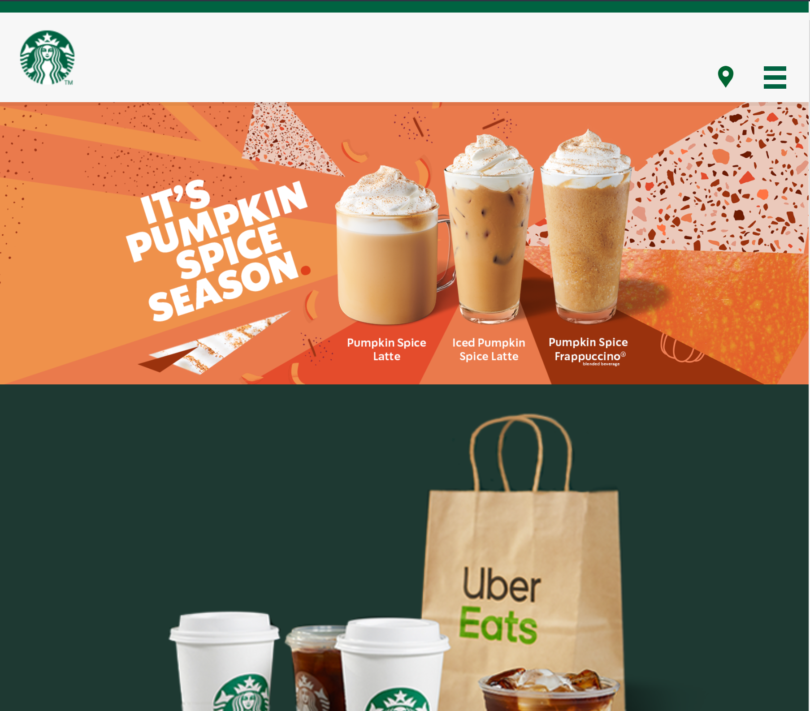
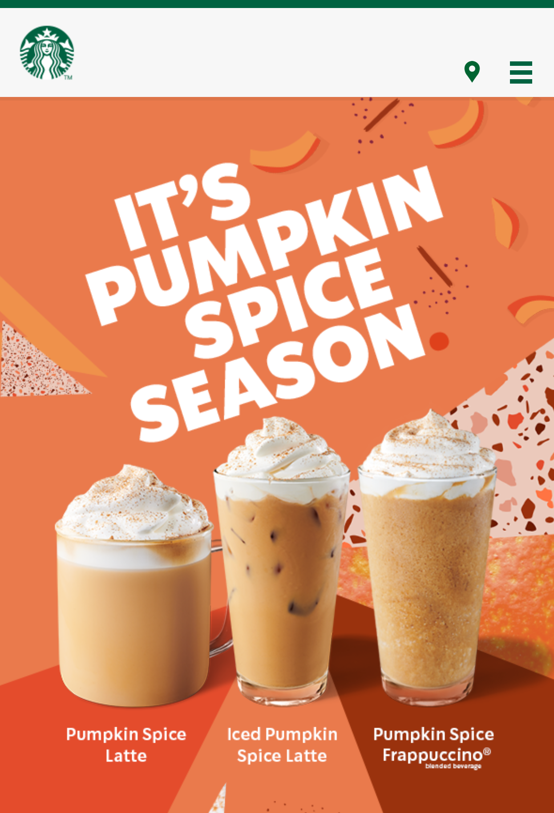
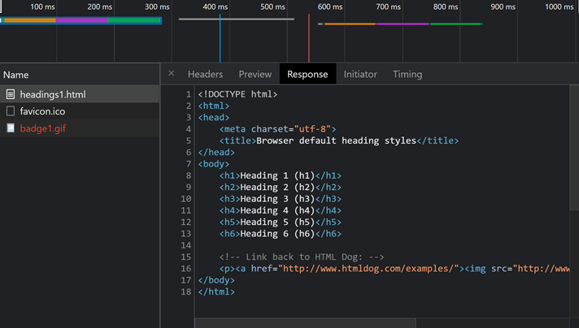
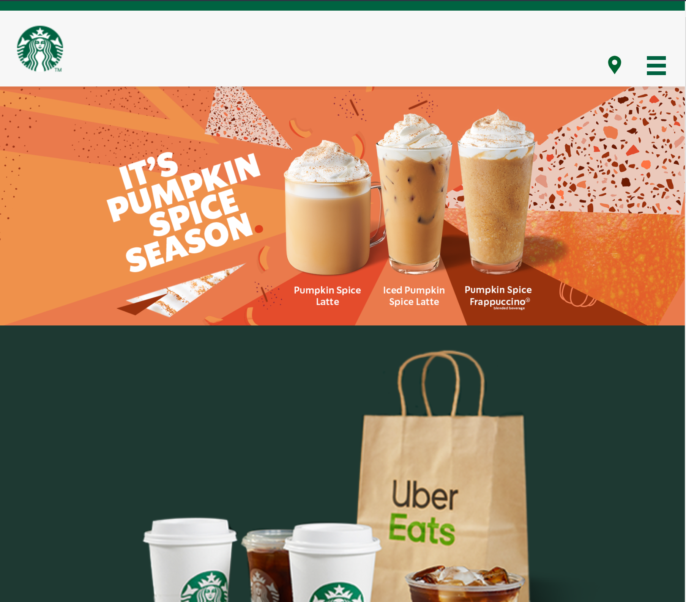
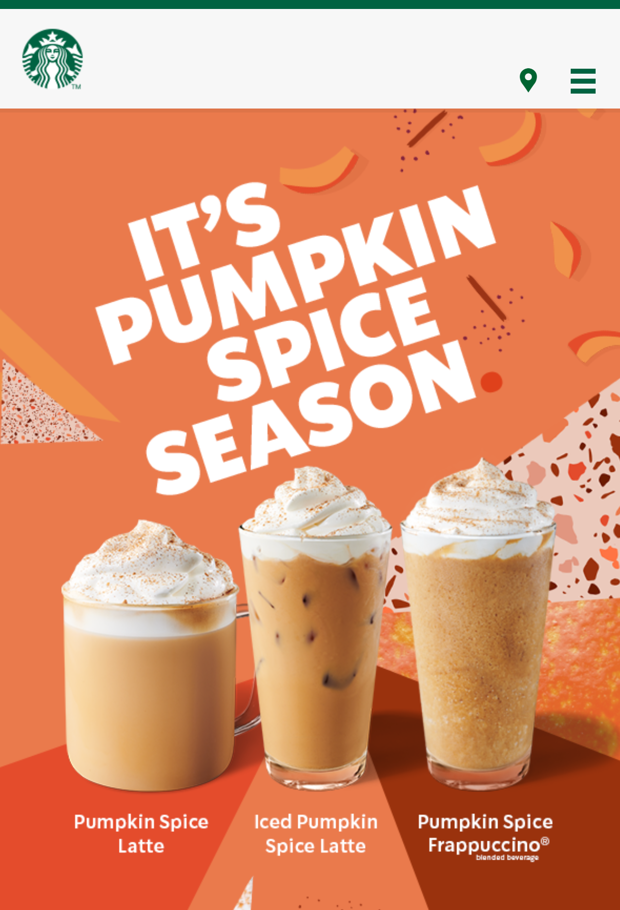

Opdracht 14
Hoeveel verschillende layouts tel je?
3 verschillende designs;
1) Start situatie: full screen

2) Header van de pagina verkleind
3) De layout van de tiles veranderd (voor gsm's)
https://www.bol.com/nl/p/hoe‐werkt‐dat-nou/9200000057347012/?country=BE&suggestionType=browse#product_alternatives
Open de Chrome ontwikkelaar tools (F12), ga naar het Network tabblad en surf naar https://www.htmldog.com/examples/headings1.html
Welke resources heeft je browser nog meer opgevraagd? Hoe zie je dit?
Hij heeft ook afbeeldingen (svg + xml en een png) en een icon (x-icon) opgevraagd.
Welke andere soorten resources worden opgevraagd door het inladen van deze pagina?
Soorten resources: scripts, fonts, stylesheet, document…
Werden alle requests naar dezelfde server verstuurd?
Requests naar verschillende servers
Hoe kun je dit uit de timing informatie afleiden?
Er worden verschillende items op verschillende momenten opgevraagd
Afhankelijk van welke webmail provider je gebruikt, zul je zien dat er na verloop van tijd requests bijkomen ook al verandert er niks aan de webpagina. Waarvoor zouden die 'spontane' requests dienen ?
Statistieken/voor advertenties/om te weten wat je al allemaal hebt bekeken
Wat betekent de status code 404 in de response header?
Page not found
Wat is het verschil met de vorige opdracht?
Bij de vorige opdracht bestond een subpagina niet van een bepaalde website, hier bestaat de hele pagina niet
Zoek op het internet welke HTTP request methods er bestaan en schrijf ze neer.
POST, GET, PUT, PATCH, DELETE
Waarvoor dienen de vaak gebruikte GET en POST methods?
GET: de GET-methode vraagt om een representatie van de opgegeven resource. Verzoeken die GET gebruiken, mogen alleen gegevens ophalen.
POST: de POST-methode wordt gebruikt om een entiteit naar de opgegeven bron te sturen, wat vaak een statusverandering of bijwerkingen op de server veroorzaakt.
Waar in een request staat aangegeven om welke request method het gaat, en hoe vind je dit terug in de Chrome developer tools
Als je een url in de adresbalk van je browser typt en op enter drukt, wat voor request method gebruikt de browser dan om die resource op te vragen bij de server?
Je kan ziet om welke methode het gaat in de tabel bij Method
Als je in een webpagina op een gewone hyperlink klikt, welke request method wordt er dan gebruikt?
GET
Als je in een webpagina op een gewone hyperlink klikt, welke request method wordt er dan gebruikt?
GET
Wat zou er dan gebeuren met de productgegevens?
Als dit gebeurt word alle inhoud van alle paginas gewist
Bekijk de vele requests die het inladen van die ene pagina heeft veroorzaakt. Hoeveel request waren er in totaal?
44 requests
Hoeveel kilobytes of megabytes aan data werd er verstuurd om alle nodige resources in te laden?
2,4 MB
Hoe lang duurde het vooraleer alle resources van de pagina waren ingeladen? 3,20 s
3,20 s
Waarom is dit zoveel minder? Laadde de pagina sneller?
omdat hij al een deel van de resources eens heeft moeten laden en in 2,17s werd de pagina geladen (sneller)
Waar kun je zien welke documenten daadwerkelijk verstuurd werden en welke niet?
Je kan zien wat er is verstuurd bij Size
Waar vindt de browser dan de inhoud van de documenten die niet bij de server werden opgevraagd?
Je kan dit ook terugvinden bij Size
Schrijf bij elke webpagina hoeveel tracking scripts door Ghostery worden ontdekt.
Hoeveel verschillende layouts tel je?
3 verschillende designs;
1) Start situatie: full screen
2) Header van de pagina verkleind
3) De layout van de tiles veranderd (voor gsm's)
